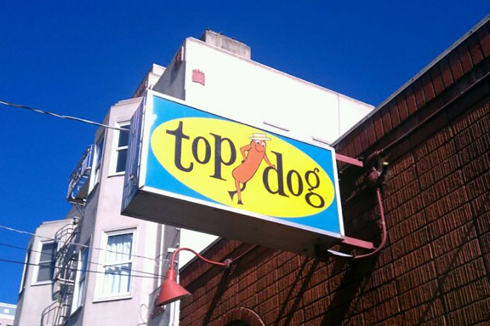

It all started in 1966...
Sampling around for the best frankfurter to sell (and eat!) led to other fine sausages and the idea was born to offer them as hot dogs as well. When no right site could be found in S.F. or Sausalito, hello, Berkeley. That was 1966 and with the paint hardly dry we opened on —surprise— a home football game day...